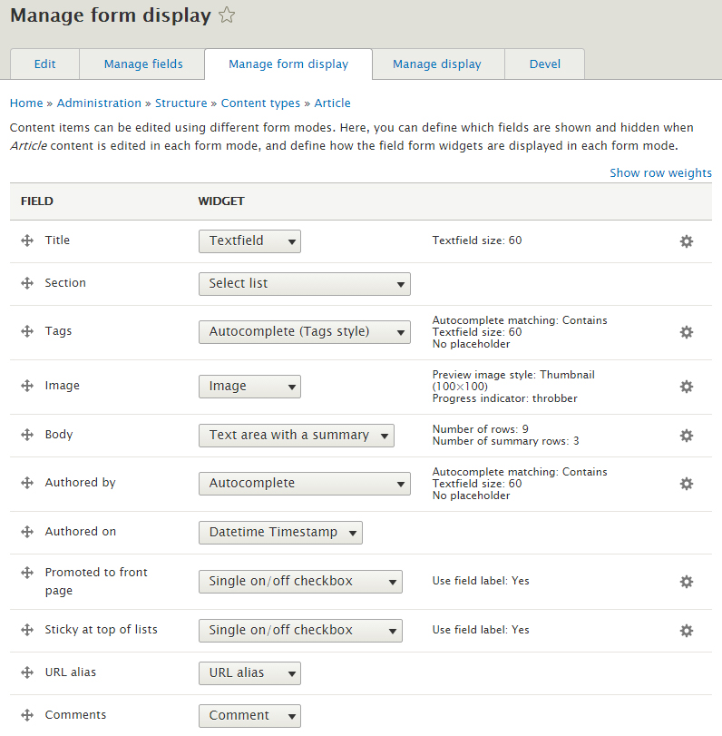
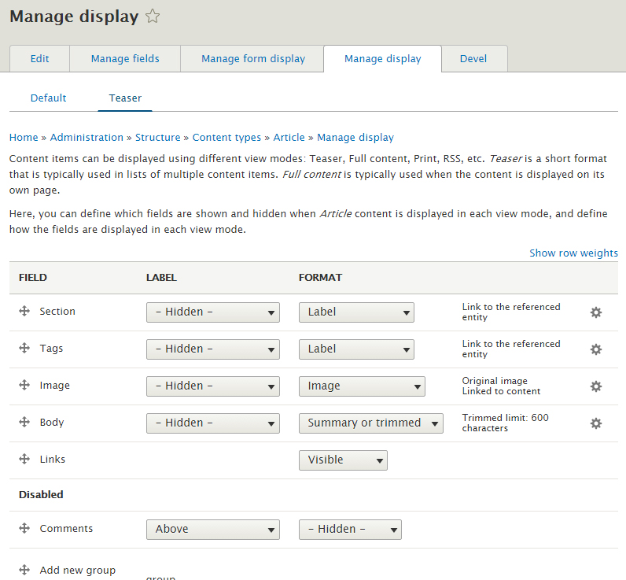
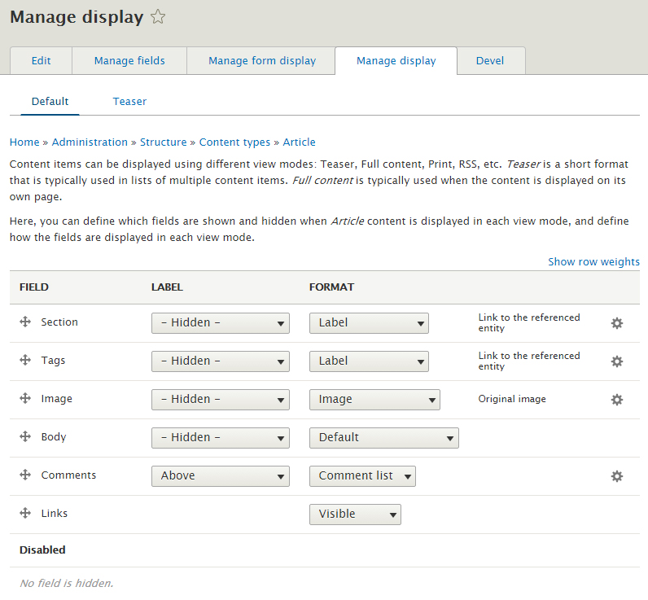
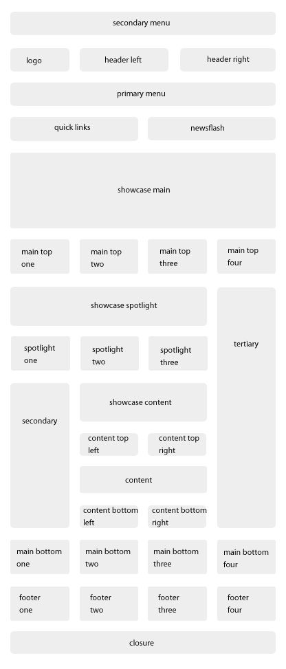

2. Omni 8.x Basic Setup
Introduction
Thank you for purchasing ESORS's Drupal theme - Omni Magazine. Omni theme build for Drupal natively, not repack from other CMS platform. We reduce third party modules usage by using Drupal Content Type, Block Type and Views so you can have a clean and less stress start.
For Drupal beginner, we wrote a short tutorial to help you find your way around Drupal and quickly pass Drupal learning curve. If you already know Drupal, you can continue with following section.
For support, you can contact us through themeforest.net. We will respond within 24hrs.
Table of Content
- Introduction
- Theme Pack Folder Structure
- Installation
-
Basic Configuration
- Enable required modules
- Configure Blocks
- Set taxonomy terms
- Modify Article Content Type
- Import views
- Setup avatar
- Omni Magazine theme setting
- Image Size
- Block Regions Map
Omni Basic Setup
- Introduction
In this section, we will show you some basic setup steps that Omni theme need. By using this guide, we assume you have basic knowledge of Drupal and have Drupal 8.x installed on your system.
- Theme Pack Folder Structure
- omni: theme files folder
- omni_magazine: this is the actual theme, please upload this folder to your server.
- licensing
- modules: all required modules for Omni Drupal theme.
- document
- user guide
- views: importable view files
- README.txt
- Installation
There is a modules folder within the download package which include all necessary modules for this theme. Only package included version of modules were tested for compatibility. If new version released please backup before upgrade since it might not be compatible.
Please install Omni Magazine theme and following Modules (If you don't know how to install Drupal theme, please check our Drupal Quick Start guide):
- Admin Toolbar 8.x-1.14
- Share Buttons by AddToAny 8.x-1.10
- Configuration Update Manager 8.x-1.0
- Features 8.x-3.0-alpha6
- Field Group 8.x-1.0-rc4
- Inline Entity Form 8.x-1.0-alpha3
- Omni Custom
- Omni Feature: simply import all content type & block type for Omni theme. Available within download files.
- Basic Configuration
You need to do ALL the following steps, even if you think you might not need it for now.
1. Enable required modules BY ORDER!
Go to Extend page:
- Enable modules Aggregator, Forum , Statistics, Field Group, Inline Entity Form, AddToAny then click Save Configuration
- Enable modules Features, Features UI and Configuration Update Base then click Save Configuration
- Enable modules Omni Custom and Omni Feature then click Save Configuration
2. Configure Blocks
Go to Structure > Block layout
- Remove(disable) Search, Footer Menu, Tools, Powered by Drupal blocks from Site Info region.
- Configure Site branding block. Toggle Branding Elements: Check Logo & Slogan OR Site name & Slogan. It can't display Logo & Site Name at same time.
- Configure Main navigation block. Change Maximum number of menu levels to display as 3, then Save block.
- Configure Page title block. Check Content Types for Basic page & Forum topic, then Save block.
- Keep the rest of blocks as it is.
3. Set taxonomy terms
Go to Structure > Taxonomy. There should be 3 existing vocabularies:
- Forums
- Section: we need to adding some sample terms for Section vocabulary
- Click Add term link and add term News, fill in Description (optional), select a Color then click Save
- Click Add term link and add term Sport, fill in Description (optional), select a Color then click Save
- Click Add term link and add term Tech, fill in Description (optional), select a Color then click Save
- Click Add term link and add term Travel, fill in Description (optional), select a Color then click Save
- Tags
4. Modify Article Content Type
Go to Structure > Content types. After all required modules installed, there should be 4 content types:
- Article: we need to reorder the display
- Click on Manage form display link
- Make sure fields show order & setting as below.

- Click on Manage display tab
- Make sure fields show as below for both default & teaser. Image should set to Original image style.


- Complete
- Basic page: keep as it is
- Blog: keep as it is
- Forum topic: keep as it is
5. Import views
Go to Configuration > Configuration synchronization > Import tab > Single item
- Select View for Configuration type
- Open omni-magazine-drupal-theme/drupal 8/document/views/views.view.article_block.yml file
- Copy & Paste views.view.article_block.yml file content into Paste your configuration here box
- Click Import then Confirm
- Do the same for views.view.blog_block.yml & views.view.page_block.yml
Go to Structure > Views. There should be three more views that you just imported:
- Article Block
- Blog Block
- Page and Block: this view need to be modified before use. Please check Omni Feature Setup user guide Page and Block view section for detail.
6. Setup avatar
Go to Configuration > Account setting > Manage fields
- Edit Picture field
- Upload images/avatar.png file as default image
- Click Save Configuration
7. Omni Magazine theme setting
Go to Appearance
- Enable and set Omni Magazine as Default theme
- Make sure administration theme set to Seven
- Click Setting link under Omni Magazine
- Color Scheme should set to Default Compact
- Omni Setting
- Header Style: it should match Color Scheme. For example, if you select Color Scheme as Default Box then Header Style should be Box Width Style.
- Compact Style (default style)
- Full Width Style
- Box Width Style
- Menu Style
- Drop Down Menu (default style)
- Mega Menu (see Omni Feature Setup)
- Hybrid Menu (see Omni Feature Setup)
- Layout Options: switch sidebars position
- Primary/Secondary/Tertiary (default style)
- Secondary/Primary/Tertiary
- Tertiary/Primary/Secondary
- Display header search box? (no as default)
- Save the change
- Image Size
With two sidebars layout, default image size for both Article and Blog node should be at least 740px width.
- Block Regions Map

Copyright
The content of this document is copyrighted by ESORS.com. © 2008-2012 All rights reserved. No portion of the content may be directly or indirectly copied, published, reproduced, modified, performed, displayed, sold, transmitted, broadcast, rewritten for broadcast or publication or redistributed in any medium.